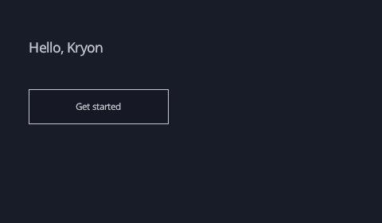

Give your idea a screen.
Start with a few lines of .kry. Describe your interface with familiar, readable code.
Write an interface →Kryon is a compact language and native UI runtime for making things that work. Start with a small idea, and give it an interface.
Open source · Native UI · Readable code

#import "kryon.h"
app "Hello, Kryon" {
size 480 280
}
App :: () #ui {
Screen root: {
Background((Color){247, 243, 235, 255})
Text((TextProps){.bounds = {36,48,408,40}, .text = "Hello, Kryon", .font = Text24, .wrap = TextWrapNone})
Button((ButtonProps){.bounds = {36,112,176,44}, .label = "Get started"})
}
}

A real capture from Kryon’s preview tool. The Playground lets you inspect the generated code and supported KRB nodes.
Start with a few lines of .kry. Describe your interface with familiar, readable code.
Write an interface →Use the C runtime for UI, text, layout, assets, and the details applications share.
Explore the runtime →Explore native renderers and portable cartridges, with clear coverage for each path.
Choose a renderer →Meet the apps in the Kryon showcase .
Native C is the most complete application path. C++ uses the C runtime; Go has a tested declarative subset. Portable KRB cartridges cover a smaller interface surface.
The browser Playground runs compilers and a KRB preview. The JavaScript application target is paused while a future HTML and CSS target is explored.
See coverage and test evidence →